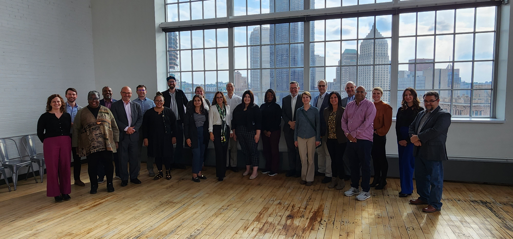
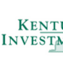
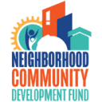
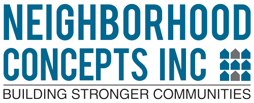
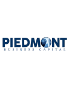
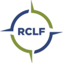
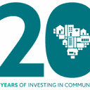

Rooted in communities.
Connected for greater impact.
At the heart of ACC is a network of 46 community-based CDFIs with more than $5 billion in combined assets. These institutions know their communities—the entrepreneurs, opportunities, and local challenges. ACC unites this local insight with capital, technology, and scale that no single lender can achieve alone.
The Power of a Unified CDFI Ecosystem
Appalachia’s community development financial institutions are deeply embedded in the towns and counties they serve. They sit across kitchen tables with first-time entrepreneurs, underwrite main street revivals, and finance renewable energy transitions.
Individually, community lenders often faced barriers when accessing large national institutional investors or managing high-tech underwriting infrastructure. Appalachian Community Capital serves as the catalytic intermediary—aggregating regional demand, syndicating blended capital, and delivering shared analytics.

Collaborative Network Cohorts
Member executives convene regularly across the 13 states to share risk models, co-lend on larger transactions, and steer regional capital strategies.
Serving 423 Counties Across 13 States
From Southern New York through the heart of Central Appalachia to Northern Alabama and Mississippi, ACC members serve rural markets with high poverty, industrial transition, and extraordinary entrepreneurial vitality.
The Appalachian Regional Commission (ARC) Territory
Established in partnership with ARC, ACC's member CDFIs provide seamless lending coverage across every single subregion of Appalachia: Northern, North Central, Central, South Central, and Southern Appalachia.
Coverage Highlights
Explore ACC Member Institutions
Filter by state or search by institution name to explore the CDFIs, community lenders, and aligned energy partners delivering capital across Appalachia.
Access to Capital for Entrepreneurs (ACE)
Specializes in small business loans paired with intensive business consulting and financial education for underserved entrepreneurs, women, and minority business owners across Georgia.
Alternatives Federal Credit Union
Dedicated to building community wealth and financial wellness through affordable lending, free tax assistance, and financial coaching for underserved communities in upstate New York.
Appalachian Development Corporation (ADC)
Promotes economic development and job creation across Appalachian South Carolina by providing SBA 504 loans, direct small business financing, and working capital.
Appalachian Growth Capital (AGC)
Delivers flexible small business financing and technical assistance to companies and commercial enterprises throughout the 32 Appalachian counties of eastern and southern Ohio.
Bridgeway Capital
Combines capital and educational resources to spur economic opportunity, supporting small businesses, healthy food access, community real estate, and creative enterprises across Western PA, WV, and OH.
Bronze Valley
An investment platform and CDFI supporting diverse innovation, tech startups, and female- and minority-led enterprises, accelerating capital access and tech-enabled jobs across the South.
Carolina Community Impact (CCI)
Provides microloans, small business debt, and credit coaching to underserved entrepreneurs and microenterprises throughout North Carolina unable to secure traditional commercial loans.
Carolina Small Business Development Fund
Fosters economic prosperity across North Carolina by providing small business loans, technical coaching, and business development solutions for startups, minorities, and women entrepreneurs.
Community Reinvestment Fund, USA (CRF)
A national nonprofit CDFI delivering transformative capital, fintech platforms, and loan syndication capacity to strengthen local community development lenders across Appalachia and nationwide.
CommunityWorks
Builds financial equity and creates opportunities for underserved families and small businesses across South Carolina through microbusiness lending, downpayment assistance, and affordable housing finance.
Community Ventures
Helps Kentucky families and entrepreneurs build wealth and prosperity through homeownership programs, business incubation, and accessible commercial and small enterprise loans.
CommunityWorks in West Virginia
A statewide network of community-based non-profit organizations working together to create affordable housing opportunities, enterprise credit, and neighborhood revitalization in West Virginia.
Disability Opportunity Fund (DOF)
Provides specialized financing and technical assistance to organizations serving people with disabilities and their families across healthcare, accessible housing, and vocational facilities nationwide.
Economic & Community Development Institute
One of the top SBA microlenders nationwide, delivering small business loans, business training, and an incubator network for underserved and low-income entrepreneurs across Ohio.
Finance Fund Capital Corporation (FCAP)
Bridges financing gaps in underserved Ohio communities for manufacturing, healthcare centers, commercial real estate, and healthy food distribution initiatives.
Foodshed Capital
Provides zero-to-low interest, non-extractive loans and business mentoring to regenerative farmers, sustainable agriculture operations, and equitable regional food systems.
Hampton Roads Ventures, LLC
Specializes in New Markets Tax Credit (NMTC) financing and debt deployment for high-impact industrial, healthcare, and infrastructure projects in economically distressed rural areas.
IFF
Champions nonprofits, federally qualified health centers, and community institutions with comprehensive loan capital and real estate facility planning to maximize community impact.
Institute Capital (the Institute)
The CDFI affiliate of the North Carolina Institute of Minority Economic Development, providing debt solutions, equity, and business advisory to diverse and minority-owned firms.
InvestPGH
City-partnered CDFI providing microloans, commercial facade loans, and contractor lines of credit to stimulate equitable economic growth and small business retention in Western Pennsylvania.

Kentucky Highlands Investment Corporation
Founded in 1968, KHIC has catalyzed thousands of jobs across 22 southern and eastern Kentucky counties through venture debt, equipment loans, and comprehensive business assistance.
LiftFund
Provides capital and business coaching to micro-enterprises and small business owners who lack access to conventional commercial bank loans across rural and underserved areas.
Locus
Connects mission-driven capital with community-based institutions, financing renewable energy, affordable housing, and community real estate across Virginia and Central Appalachia.
Mountain Association
Invests in people and places in Eastern Kentucky through loans, renewable energy financing, and direct business coaching to build a resilient, diverse, and just new economy.
Mountain BizWorks
Provides small business loans, business coaching, and disaster recovery financing across 26 Western North Carolina mountain counties. Anchor administrator of the WNC Small Business Initiative.

Neighborhood Community Development Fund
Delivers financing and technical support to small businesses, real estate developers, and social ventures revitalizing diverse neighborhoods across Pittsburgh and Allegheny County.

North Alabama Revolving Loan Fund
Administered by Neighborhood Concepts, providing flexible financing and technical assistance to start-ups and existing small enterprises across North Alabama unable to access conventional bank loans.
Opportunity Alabama (OPAL)
A nonprofit initiative dedicated to connecting capital with place, OPAL drives investment in Alabama’s rural towns, Opportunity Zones, and main street enterprises to stimulate sustainable growth.
Park Community Credit Union
A CDFI-certified cooperative credit union offering fair lending, credit restoration, and accessible consumer and commercial loans throughout Kentucky communities.
Partner Community Capital (PCAP)
Delivers flexible capital and advisory services to triple-bottom-line businesses in renewable energy, sustainable agriculture, ecotourism, and community facilities across West Virginia and surrounding states.
Pathway Lending
Drives economic development by providing commercial lending, renewable energy financing, and Women's Business Center technical assistance to under-resourced entrepreneurs across Tennessee and contiguous states.
People Incorporated
Community Action Agency and CDFI providing microloans, business lines of credit, and financial coaching to small business owners and community centers in Southwest Virginia.

Piedmont Business Capital
Empowers women, minority, and low-wealth small business owners with microloans and strategic business consulting to foster local wealth creation across North Carolina.

Renaissance Community Loan Fund
Provides innovative commercial and home mortgage lending, small business working capital, and community development financing across Mississippi and Alabama.

Sabre Finance
Delivers micro-loans and small business capital to help Alabama entrepreneurs establish and grow their enterprises, creating sustainable jobs in under-resourced towns.

South Carolina Community Loan Fund
Advances equitable community development by providing loans and technical assistance for affordable housing, healthy food retail, community facilities, and small businesses throughout South Carolina.
Southeast Rural Community Assistance Project (SERCAP)
Dedicated to improving water, wastewater, community infrastructure, and small business financing for low-to-moderate-income rural communities throughout 7 southeastern states.
Southeast Kentucky Economic Development (SKED)
Formed in 1986 to stimulate economic growth in 45 southern and eastern Kentucky counties through business loans, SBA lending, and workforce coaching.
TAP / Business Seed Capital
Part of Total Action for Progress (TAP), providing Seed Capital microloans, startup support, and business coaching to aspiring entrepreneurs in Western Virginia.
The Center for Rural Health Development
Manages the West Virginia Loan Fund to provide low-cost capital for rural health centers, clinics, dental practices, and community healthcare infrastructure.
The Progress Fund
Specializes in financing recreation, hospitality, agricultural tourism, and trail-side small businesses across Pennsylvania, West Virginia, Maryland, and Ohio.
Three Rivers Planning & Development
Promotes economic vitality and local enterprise in Northeast Mississippi through revolving loan funds, commercial lending, and infrastructure financing.
Virginia Community Development Fund
Administers flexible lending programs to finance community facilities, affordable housing initiatives, and job-creating enterprises across underserved Virginia regions.
Woodlands Community Lenders
Supports downtown revitalizations, food enterprises, and rural entrepreneurship across Barbour, Randolph, and Tucker counties with targeted loan capital.
Reinvestment Fund (RF)
Brings financial and analytical tools to create healthy, equitable communities, investing billions in affordable housing, renewable energy, schools, and community healthcare.
Redefine Alliance / Impact Investing Fund (RIIF)
Aligns low-carbon technologies, renewable energy projects, and catalytic capital to transform underserved energy and rural communities into resilient local economies.
Are you a CDFI serving Appalachia?
Explore full network membership benefits, peer learning cohorts, and loan participation pools.
Why Community Lenders Join ACC
Participation in ACC gives locally rooted institutions the collective power, institutional balance sheet, and technological tools of a multi-billion-dollar regional network.
Scalable Debt & Loan Syndication
Members access wholesale capital pools, off-balance sheet loan participations, and Community Investment Notes without bearing the full cost of independent syndication.
- $40M Community Investment Notes pool
- Syndication on deals exceeding member caps
- 3:1 private capital leverage
ACC Data Analytics Hub
Members gain enterprise access to geospatial pipeline tracking, market demand modeling, and lead generation tools that accelerate underwriting and reduce customer acquisition costs.
- 16 participating CDFIs actively connected
- 4,800 regional businesses mapped
- 1,000+ warm verified loan leads generated
Peer Exchange & Leadership Development
Direct participation in CEO peer circles, executive succession masterclasses, and specialized certifications like the Community Investment Training (CIT) cohort program.
- 56 leaders from 5 states in current cohort
- $690K raised for technical assistance
- Diverse leadership networks (21 women/POC)
Membership Benefits
Becoming a member of Appalachian Community Capital connects your CDFI to dedicated debt facilities, regional governance, and vital technical support:
-
1
Financing for Organizations Direct access to debt capital and wholesale lending facilities for organizations that meet ACC lending requirements.
-
2
Board of Directors Representation Eligibility for membership and voting voice on the ACC Board of Directors, ensuring strategic guidance reflects local practitioner needs.
-
3
Shared Best Practices & Feedback Active peer-learning networks and collaborative feedback sessions with fellow regional CDFIs to continuously elevate community development lending.
Membership Criteria
ACC membership is open to mission-driven lending institutions meeting the following standards:
- Appalachian Footprint: Operates in the Appalachian Region service area as defined by the Appalachian Regional Commission (ARC).
- Mission-Based Enterprise Lender: Primarily provides business and enterprise loans dedicated to improving social and economic conditions for underserved residents.
- Distressed Market Targeting: Serves economically distressed communities, low-income populations, or underbanked markets with development services paired to loans.
- Impact Tracking: Maintains a comprehensive impact measurement and loan tracking system.
- Program Sophistication: Demonstrated compliance with recognized programs (CDFI Fund, regulated bank/credit union, SBA 504/7a, USDA B&I, or Treasury SBLF).
Annual Dues Structure for New Members
How to Become an ACC Member
Organizations interested in joining Appalachian Community Capital submit standard underwriting and community lending records for Board review during regularly scheduled quarterly meetings.
- 1-page narrative of current or planned community lending in Appalachia
- Most recent interim financial statement & audited financials (past 3 years)
- Loan portfolio reports (aging summary, charge-offs, non-accruals)
- Organizational chart & executive leadership contacts
Shauna Yeldell
Ready to explore network membership, loan syndications, or review application criteria? Connect directly with ACC Lending Leadership: